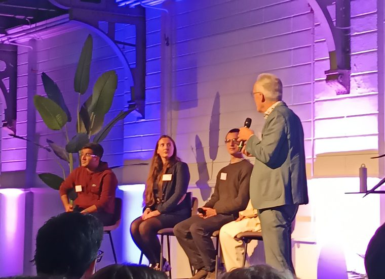

I am a PhD candidate at TU Delft working on transport simulation of disease spread, based at the Pandemic and Disaster Preparedness Centre. I trained first as an industrial and systems engineer, then as a policy researcher, and the thread running through all of it is systems modelling: building things that make a complex, sparsely observed system clear enough to act on.
Most of my current work asks a version of the same question. If a pathogen is moving through the world’s airports and seaports, where would you have to be looking to notice in time? In practice that becomes data pipelines that stitch aviation, maritime, demographic and epidemiological sources together, simulation and network models built on top of them, and ways of ranking flights, vessels and routes so that somebody can act on the answer. What I care about most is whether any of it survives contact with reality: sparse data, noisy streams, regulatory requirements, and a decision maker who needs to know why the model said what it said.
Amsterdam Airport Schiphol and the Port of Rotterdam are the two case studies I keep coming back to. Both operate at a scale where the underlying networks become complex in their own right. What draws me to this work is the last step, where a model has to become something a policymaker can act on. Away from all that: cycling, coffee, long walks, museums and galleries.
Experience
-
Sep 2023 — present
PhD Candidate
Delft University of Technology — Pandemic and Disaster Preparedness Centre
INSPECT project, Frontrunner 5.
- Lead the design of data pipelines that bring aviation, maritime, demographic and epidemiological datasets together, so that the networks running through major transport hubs can be modelled and public health authorities warned sooner.
- Build analytics that combine System Dynamics, agent based models and network analysis to assess operational risk across international transport networks.
- Develop ways of ranking flights, vessels and routes under uncertainty, so that surveillance effort goes where it will matter most.
- Work inside real constraints, including gaps in the data, noisy streams and regulatory requirements, so that models stay usable, explainable and open to audit.
- Supervise bachelor's and master's projects, most of them applied analytics built around Schiphol and the Port of Rotterdam as case studies.
- Turn technical findings into briefings, policy notes and workshops for public authorities and infrastructure operators.
-
Nov 2022 — Sep 2023
Research Fellow
University College London — Institute for Environmental Design and Engineering
- Designed decision tools for urban infrastructure and water systems, grounded in the available data.
- Led the analytics that went in front of stakeholders during policy and investment discussions.
- Coordinated data, modelling and reporting across several projects at once.
-
2019 — 2021
Freelance Consultant
Systems modelling and operations — remote and Tehran
Independent consulting for clients in energy services and in manufacturing during the crisis years.
- Designed analytics pipelines and models of demand and capacity that shaped production planning and supply resilience through the COVID-19 disruption.
- Moved an engineering services firm away from traditional goal setting and onto OKRs, and trained staff in OKRs and systems thinking.
- Set up a system for recording data and documentation under ISO 9001:2015.
- Assessed new business lines and startups for investment, alongside the R&D and organisational development teams.
-
2019 — 2020
Co-Founder
Hamboodgah — part time
A crowdfunding platform and social network for local book publishing.
- Set up the crowdfunding system, with a focus on selling to organisations.
- Drew up process maps and a documentation system built around how information actually moved.
- Reworked the sales system, and we reached twice the target in the first quarter.
Education
-
2021 — 2022
MSc in Policy Research
University of Bristol
Dissertation: a scoping review of simulation models that did not rely on machine learning, covering prevalence, interventions and policy implications through the COVID-19 pandemic internationally.
- Quantitative methods: experimental and cross sectional design, longitudinal studies, ANOVA, regression, principal component analysis and tests that assume no particular distribution, worked in SPSS and R.
- Qualitative methods: interviewing, focus groups, observation and systematic review, worked in NVivo and Covidence.
- Policy: analysing policy in complex settings, how evidence reaches decisions, weighing costs against benefits, and what happens at implementation.
-
2012 — 2017
BEng in Industrial Engineering
Azad University, North Tehran Branch
- Operations research, stochastic models and queueing theory, statistical quality control, production planning and inventory control, facilities planning, foundations of simulation, and engineering economics.
Supervision
-
2026
Tracing pathogens through airport wastewater sampling
MSc thesis — TU Delft
Designing wastewater sampling networks at airports to detect infectious disease, using a mixed integer optimisation model.
-
2024
Prioritising wastewater sampling in the Port of Rotterdam
BSc project — TU Delft
Letting the data decide where to sample first.
-
2024
Gastrointestinal illness on cruise ships
BSc project — TU Delft
A risk analysis for the Port of Rotterdam.
-
2024
Simulating COVID-19 on cruise ships
BSc project — TU Delft
Simulating individual passengers and the alpha variant on the voyage from Sydney to Rotterdam.
-
2024
Disease spread at Schiphol Airport
BSc project — TU Delft
A behavioural model of transmission inside the terminal.
-
2024
Disease detection at Schiphol
BSc project — TU Delft
How the origin of a flight changes the chance of a passenger bringing a harmful illness into the Netherlands.
-
2024
The role of transport hubs in worldwide disease spread
BSc project — TU Delft
Talks
-
Jul 2026
Modelling Travel-Capable Infectious Population for a Transport-Based Early Warning System
International System Dynamics Conference — Delft, 20–24 July 2026
-
Nov 2025
Early Warning Analysis of Infectious Disease Spread Under Sparse Data: An Open Exploration with DMDU
Decision Making Under Deep Uncertainty Society Annual Meeting — London, 17–20 November 2025
-
Oct 2025
An Analytical Framework for Transport Routes Analysis to Support a Wastewater-Based Early Warning System
3rd Pandemic and Disaster Preparedness Centre Conference — Rotterdam, 3 October 2025

Presenting at the 3rd PDPC Conference in Rotterdam. -
Oct 2024
Integrated Early-Warning Surveillance Methods and Tools
2nd Congress on Pandemic and Disaster Preparedness Research — Rotterdam, 3 October 2024
A joint session on combining transport network data with epi intelligence, sampling methods and metaviromics into an early warning system for pathogen X, with Gertjan Medema, Putri Ayu Fajar, Ege Sener and Georgie Mills.

On the panel at the 2nd Congress on Pandemic and Disaster Preparedness Research, Rotterdam.

{kind=link}
Skills
- Modelling
- System Dynamics, agent based modelling, network analysis, simulation, risk analysis
- Research
- Quantitative and qualitative methods, systematic review, participatory research, policy analysis
- Tools
- Python, R, SPSS, NVivo, Covidence, Vensim
- Also
- Systems thinking, academic writing, leading teams, talking to stakeholders
- Languages
- English (fluent), Persian (native), Turkish (intermediate), Dutch (beginner)
Service
-
2024
Co-organiser, Policy Analysis Colloquium
TU Delft
-
2022, 2023
Reviewer, International System Dynamics Conference
System Dynamics Society — Frankfurt and Chicago
Recent writing
-
23 Apr 2024
How I killed my productivity in an effortless way
Five small habits that quietly wrecked my working days, and what changed when I noticed them.